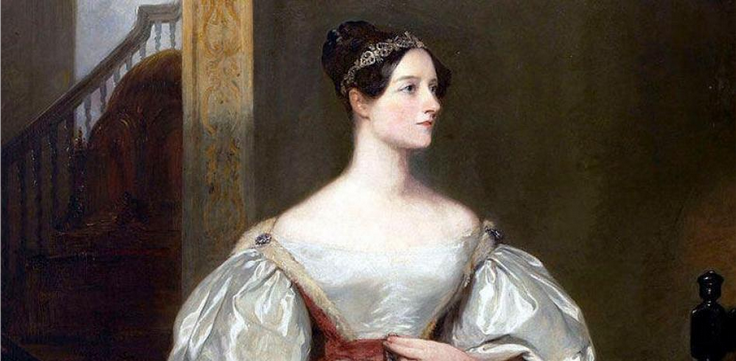
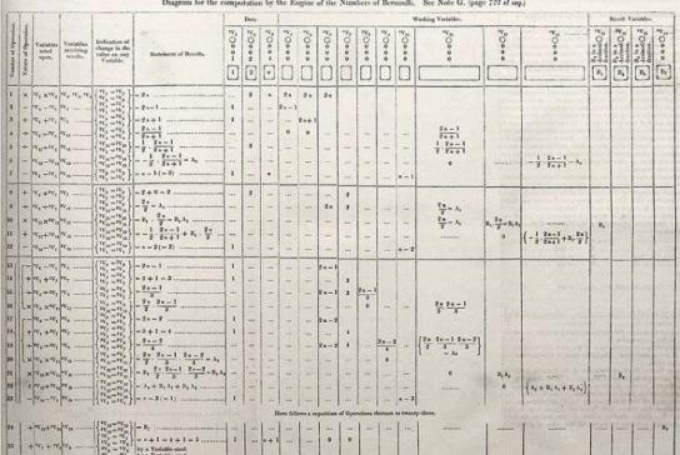

Ada Lovelace: la primera
programadora
La matemática británica Ada Lovelace, la única hija legítima de lord Byron, se adelantó a su tiempo al desarrollar el primer algoritmo destinado a ser procesado por una máquina.
Cada octubre en el segundo martes, se celebra el día internacional de Ada Lovelace, una fecha que pretende conmemorar los logros de todas las mujeres que se dedican a la tecnología, la ciencia, la ingeniería o las matemáticas. Esta celebración pone de manifiesto la relevancia que en la actualidad tiene la figura de esta pionera de la informática.
¿Cuáles fueron las aportaciones de Ada Lovelace?
Gracias a su imaginación, a su capacidad para ver más allá de la realidad inmediata, Ada fue capaz de desarrollar varios conceptos que actualmente se consideran visionarios. El más célebre se refiere al funcionamiento de lo que hoy se conoce como algoritmo informático. Ada tomó como ejemplo los números de Bernoulli (una serie infinita que juega un papel importante en la teoría de los números) para describir, por medio de un diagrama, las operaciones que la máquina de Babbage tendría que realizar para calcularlos.
También explicó cómo se introduciría ese algoritmo en la máquina, y esbozó conceptos informáticos como ciclo (grupo de instrucciones que se ejecutan varias veces) o subrutina o función (segmento de un programa que puede ser invocado en cualquier momento). Si bien no se puede afirmar que Ada formulara el primer programa informático de la historia, sí fue la primera que lo publicó.
Conclusión
- Ella fue una genio matemática
- Ella hizo una contribución influyente al motor analítico
- Ella fue la primera programadora de computadoras
- Ella fue una profetisa de la era de la informática
Posible solución
<h1 align=center>Ada Lovelace: la primera <br>programadora</h1> <hr> <p>La matemática británica <mark>Ada Lovelace</mark>, la única hija legítima de <b>lord Byron</b>, se adelantó a su tiempo al desarrollar el primer algoritmo destinado a ser procesado por una <i>máquina</i>.</p> <img src="img/photo.png" width="95%"> <br> <br> <p>Cada octubre en el segundo martes, se celebra <u>el día internacional de Ada Lovelace</u>, una fecha que pretende conmemorar los logros de todas las mujeres que se dedican a la <mark>tecnología, la ciencia, la ingeniería o las matemáticas</mark>. Esta celebración pone de manifiesto la relevancia que en la actualidad tiene la figura de esta <b><i>pionera de la informática</i></b>.</p> <h2>¿Cuáles fueron las aportaciones de Ada Lovelace?</h2> <br> <hr> <p><b><u>Gracias a su imaginación</u></b>, a su capacidad para ver más allá de la realidad inmediata, Ada fue capaz de desarrollar varios conceptos que actualmente se consideran visionarios. El más célebre se refiere al funcionamiento de lo que hoy se conoce como <b><i>algoritmo informático</i></b>. Ada tomó como ejemplo los números de Bernoulli (una serie infinita que juega un papel importante en la teoría de los números) para describir, por medio de <mark>un diagrama, las operaciones que la máquina de Babbage tendría que realizar para calcularlos.</mark></p> <img src="img/diagram.png" width="90%"> <br> <br> <br> <p>También explicó cómo se introduciría ese algoritmo en la máquina, y esbozó conceptos informáticos como <b><u>ciclo</u></b> (grupo de instrucciones que se ejecutan varias veces) o <b><u>subrutina o función</u></b> (segmento de un programa que puede ser invocado en cualquier momento). Si bien no se puede afirmar que Ada formulara el primer <mark>programa informático</mark> de la historia, sí fue la primera que lo publicó.</p> <h3>Conclusión</h3> <hr> <ul> <li>Ella fue una genio matemática</li> <li>Ella hizo una contribución influyente al motor analítico</li> <li>Ella fue la primera programadora de computadoras</li> <li>Ella fue una profetisa de la era de la informática</li> </ul>